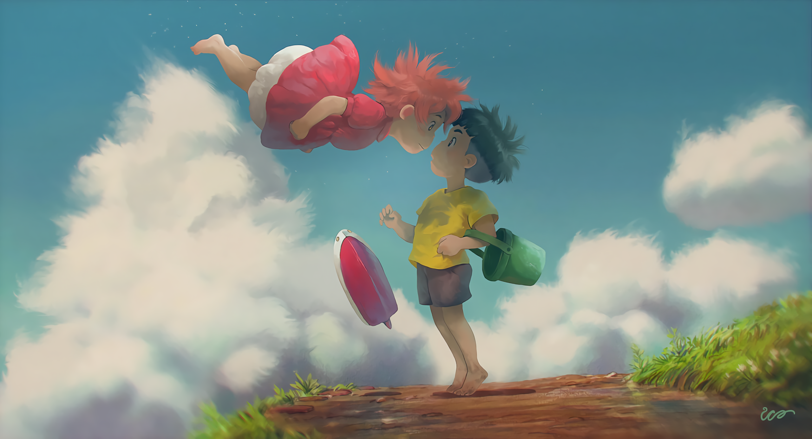
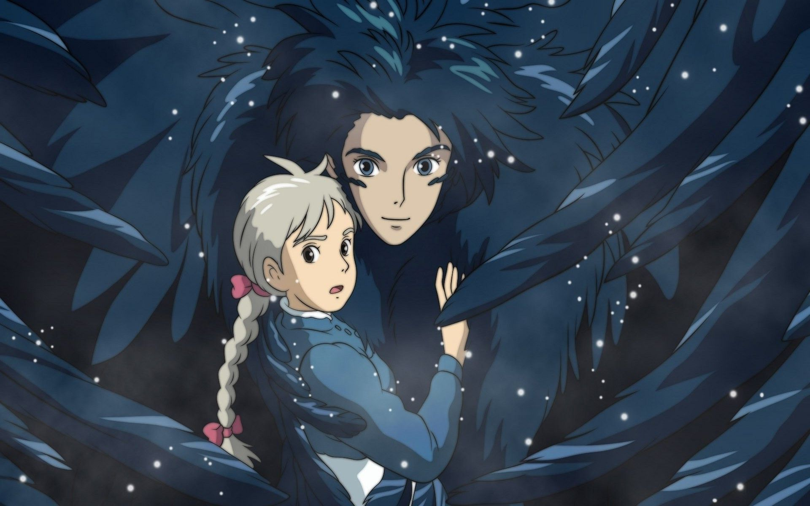
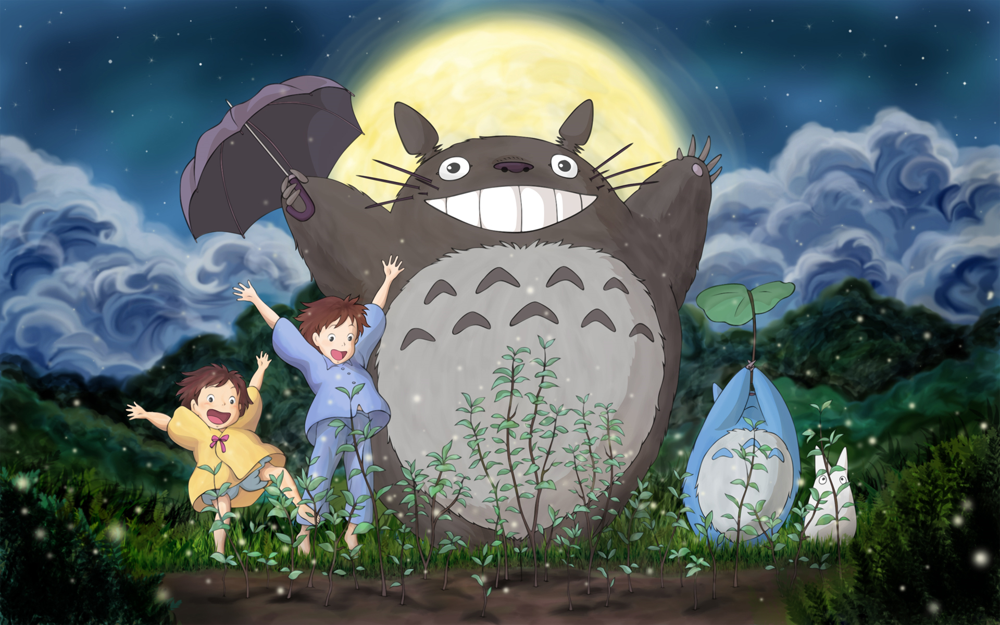
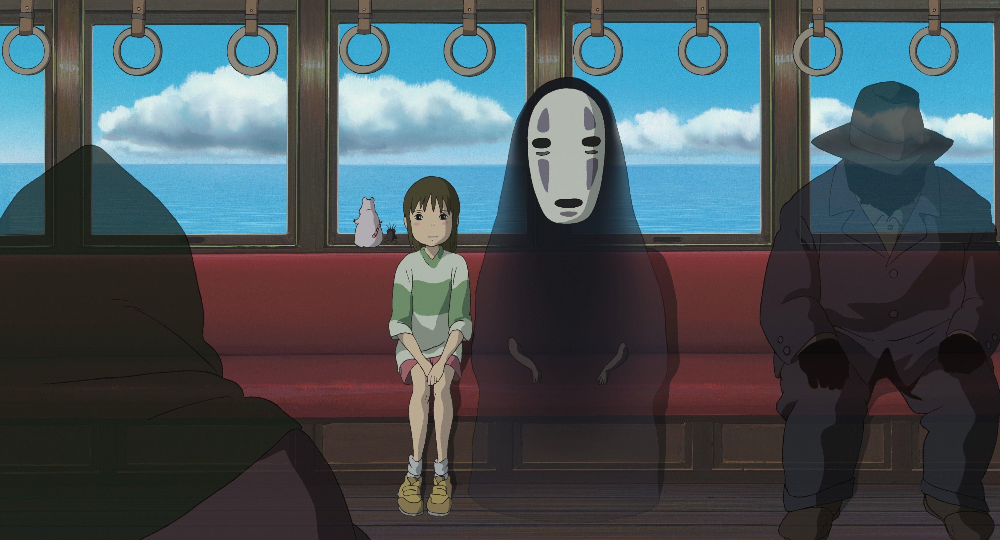

-
PONYO: UMA AMIZADE QUE VEIO DO MAR
Quando Sosuke, um menino que vive no topo de um penhasco com vista para o mar, resgata um peixinho dourado encalhado chamado Ponyo, ele descobre mais do que esperava. Ponyo é uma jovem criatura curiosa e enérgica que anseia por ser humana, mas mesmo enquanto ela causa o caos ao redor da casa, seu pai, um poderoso feiticeiro, planeja devolver Ponyo ao mar.
-
O SERVIÇO DE ENTREGAS DA KIKI

É uma tradição que todas as jovens bruxas deixem suas famílias na noite de lua cheia e voem para o mundo inteiro para aprender seu ofício. Quando essa noite chega para Kiki, ela embarca em sua nova jornada com seu sarcástico gato preto, Jiji, pousando na manhã seguinte em uma vila à beira-mar, onde suas habilidades únicas a tornam uma sensação instantânea. Não perca esta história deliciosamente imaginativa e atemporal de uma jovem encontrando seu caminho no mundo.
-
O CASTELO ANIMADO
Sophie, uma garota quieta que trabalha em uma loja de chapéus, encontra sua vida em turbulência quando ela é literalmente arrebatada por um mago bonito, mas misterioso chamado Howl. A vaidosa e vingativa Bruxa do Deserto, com ciúmes de sua amizade, amaldiçoa Sophie e a transforma em uma mulher de 90 anos. Em uma missão para quebrar o feitiço, Sophie sobe a bordo do magnífico castelo móvel de Howl e em uma nova vida de maravilhas e aventuras. Mas quando o verdadeiro poder da magia de Howl é revelado, Sophie se vê lutando para proteger os dois de uma perigosa guerra de feitiçaria que ameaça seu mundo.
-
MEU AMIGO TOTORO
Quando Satsuki e sua irmã Mei se mudam com o pai para uma nova casa no campo, descobrem que a vida no campo não é tão simples quanto parece. Eles logo descobrem que a casa e os bosques próximos estão cheios de criaturas estranhas e encantadoras, incluindo um gigantesco mas gentil espírito da floresta chamado Totoro, que só pode ser visto por crianças. Totoro e seus amigos apresentam as meninas a uma série de aventuras, incluindo um passeio a bordo do extraordinário Cat Bus, nesta obra-prima de animação para todas as idades com as vozes de Tim Daly, Lea Salonga e as irmãs da vida real Dakota e Elle Fanning, em um de seus primeiros papéis.
-
A VIAGEM DE CHIHIRO
A família de Chihiro está se mudando para uma nova casa, mas quando eles param no caminho para explorar uma vila abandonada, seus pais sofrem uma transformação misteriosa e Chihiro é levada para um mundo de espíritos fantásticos governados pela feiticeira Yubaba. Colocada para trabalhar em uma casa de banho mágica para espíritos e demônios, Chihiro deve usar toda a sua inteligência para sobreviver neste novo lugar estranho, encontrar uma maneira de libertar seus pais e retornar ao mundo normal. Repleto de criaturas imaginativas e histórias emocionantes, A Viagem de Chihiro se tornou um sucesso mundial e é um dos filmes mais aclamados pela crítica de todos os tempos.